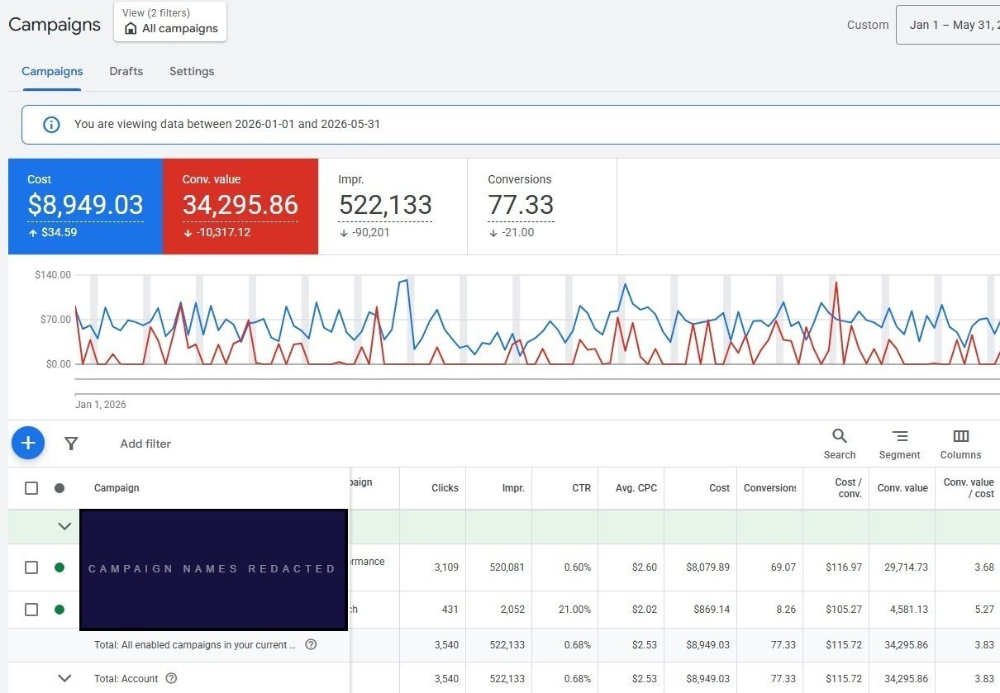

New account, months 1–5. Campaign names withheld per client NDA.
This brand had been running Meta for two years before coming to us for the Google launch. They had a purchaser list, conversion history, and customers already searching for them by name. We used all of it before the first Google campaign went live.
This brand's brief was "just set up Google Ads and see how it goes." That approach spends the first months learning things that could have been established before launch. Instead, we used the pre-launch period to review conversion measurement, revise priority product-feed titles, prepare purchaser data for Customer Match, and build the initial keyword set.
Across January–May 2026, Google Ads recorded $34,295.86 in platform-attributed conversion value from $8,949.03 in spend. 3.83× blended ROAS. Search at 5.27×. By month five, the account had its own search-term, product, and conversion history to inform what comes next.
Four areas were reviewed and settled before any campaign went live.
The existing titles reflected internal naming conventions. Useful for repeat customers, not for a new shopper searching by ingredient or product type. We revised priority products to surface clearer attributes: product type, key ingredient, format, and size. A real example: from [Brand] Brightening Complex · Luminance Series toward Vitamin C Brightening Serum · 30mL.
The brand was open to launching several campaign types at once. Given the available budget and no prior Google account history, we recommended a narrower structure: Search for keyword control, Performance Max for broader feed-led coverage anchored by the existing customer data. Each campaign needed enough budget and conversion volume to generate useful signal before adding complexity.
The brand had verified purchaser data from its Meta growth period. We prepared it for Customer Match and uploaded it before the account went live. This gave Google an additional first-party signal at launch. It did not eliminate exploration, guarantee faster learning, or restrict Performance Max to lookalikes of the uploaded list. Audience signals inform where Google looks first. They do not constrain where it looks.
We verified the purchase conversion action, conversion-value reporting, and attribution settings before launch. Meta and Google attribution models differ in ways that matter when reading early numbers. We documented those differences upfront so bid decisions would not rest on a false one-to-one comparison between platforms.
Most Google launch problems we see show up in the account six weeks after go-live. The setup work above is why they didn't show up here.
See What the Growth Diagnostic Reviews →If you recognized your account in those findings, a diagnostic session surfaces the same structural gaps and gives you a prioritized plan to address them.
Budget stayed concentrated rather than spread across multiple campaign types. The sequence was designed to establish reliable measurement, learn from real search and conversion behavior, and expand only when the account had enough history to support the next decision.
All preparation completed before the first ad dollar was spent.
| Phase | ROAS | Spend | Note |
|---|---|---|---|
| Search Campaign Jan–May 2026 | 5.27× | Phrase + exact match control | Higher-intent keyword set; held tightest query control |
| Performance Max Jan–May 2026 | 3.68× | Feed-led discovery | Customer Match uploaded pre-launch as audience signal |
| Account Total · 5-Month Blended $8,949.03 total spend | 3.83× | $34,295.86 conv. value | Full five-month documented result · Jan–May 2026 |
The existing product titles leaned on brand and collection language. We revised priority products to surface clearer attributes: product type, key ingredient, format, and size. Cleaner feed data from day one, rather than waiting for campaign optimization to compensate for it.
Search and Performance Max only. Budget stayed concentrated in two campaigns so each had enough conversion volume to generate useful data. Broader campaign types were deferred until there was a reason to add them.
The brand had two years of verified purchaser data from Meta. We prepared and uploaded the eligible list before launch as an audience input. Customer Match gave Google additional first-party signal at launch. It did not eliminate exploration, guarantee a faster learning curve, or restrict Performance Max to lookalikes of the uploaded customers.
We started with phrase and exact match to hold tighter control over the initial search-term mix. Broad match was deferred until the account had conversion history to evaluate whether broader query coverage added incremental volume without reducing efficiency past the acceptable threshold.
We verified the purchase conversion action, conversion-value reporting, and attribution settings before launch. Meta and Google attribution models differ in ways that distort early reads if you treat them as directly comparable. We documented those differences so bid decisions would not rest on a false one-to-one comparison between platform numbers.
A new account does not need to begin with every campaign type Google offers. It needs reliable measurement, useful product data, a campaign scope appropriate to the available budget, and a clear reason for what gets added next.
$34,295.86 in platform-attributed conversion value from $8,949.03 in spend. January–May 2026.
| Phase / Campaign | ROAS | Spend | Notes |
|---|---|---|---|
| Search Campaign · Months 1–5 Phrase & Exact Match | 5.27× | Higher-intent scope | Launched with phrase and exact match. Tighter query control from day one; broad match deferred until conversion history was established. |
| Performance Max · Months 1–5 Feed-Led Discovery | 3.68× | Broader product coverage | Customer Match applied as audience signal pre-launch. Feed revised for ingredient and format clarity. Evaluated separately from Search. |
| Account Total · Jan–May 2026 · Months 1–5 Blended Result | 3.83× | $8,949.03 spend | $34,295.86 platform-attributed conversion value. Account now has five months of search-term, product, and conversion history as a foundation for what comes next. |
The result is useful for more than the headline number. A clean launch structure means that when the account is ready for more complexity, you're building on a foundation with real history rather than untangling decisions made in the first week.